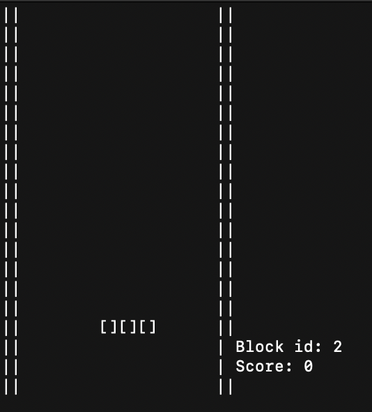
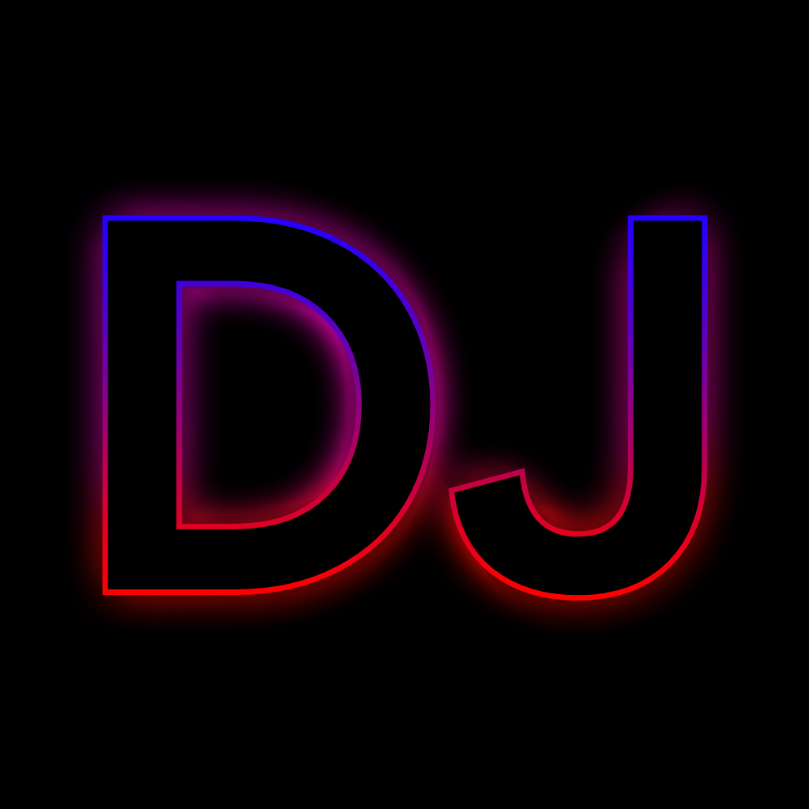

A Few things i have done...
Here are my projects, (most of them are not available in github because theres something more i gotta do.):

Projects:
|  | Tetris-Like game that you play in CLI. Made with C. |
| I have also ported it to run on arduino with a touch screen shield. | |
|  | DYNA-JUKE [ONGOING] |
| Inspired by MBUX-Sound Drive by will.i.am and Mercedes Benz, since I can't afford an EQS, I made one on my own. |